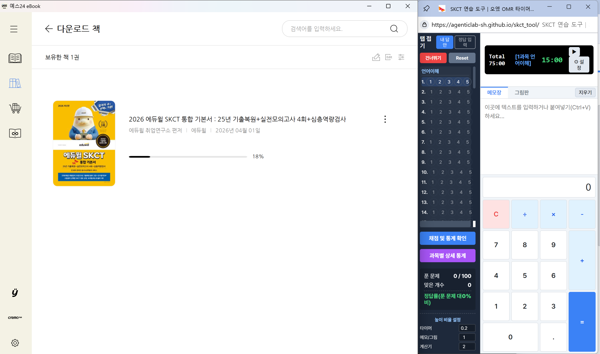

Total 00:00
[대기중]
00:00
📖 사용 가이드
📷 실제 사용 예시
▶ OMR 접은 상태 (기본)

▶ OMR 펼친 상태 (채점 모드)

🗺️ 화면 구조 안내
좌측 버튼 바
📌 HELP: 이 가이드
📌 OMR: 답안 입력 서랍
📌 ⚙ 설정: 타이머 & 높이비율
📌 ☕ 커피후원: 제작자 응원
👉 OMR에서 답 마킹 시 자동 다음 문제
👉 [건너뛰기] = 마킹 없이 스킵
🕒 다중 페이즈 타이머
과목 → 쉬는시간 사이클 자동 전환.
⚙ 설정 버튼으로 시간 조절 가능.
과목 → 쉬는시간 사이클 자동 전환.
⚙ 설정 버튼으로 시간 조절 가능.
✏️ 연습장 (그림판 & 메모장)
실제 SKCT와 동일하게 다음 문제로 넘어가면 자동 초기화됩니다.
브러쉬는 시험장 사양(진하게) 적용.
실제 SKCT와 동일하게 다음 문제로 넘어가면 자동 초기화됩니다.
브러쉬는 시험장 사양(진하게) 적용.
🧮 키보드 계산기
실제 시험과 동일 (Delete, Esc 금지. 오직 C 버튼 허용)
실제 시험과 동일 (Delete, Esc 금지. 오직 C 버튼 허용)